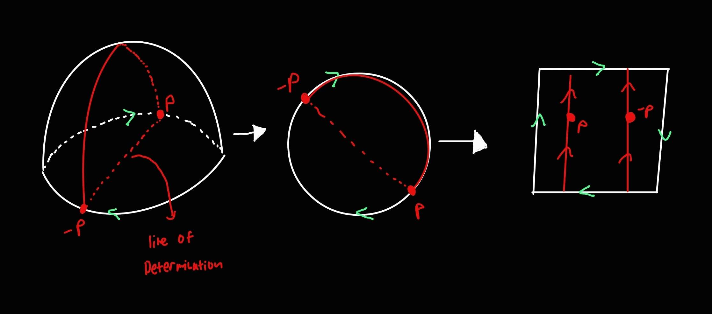
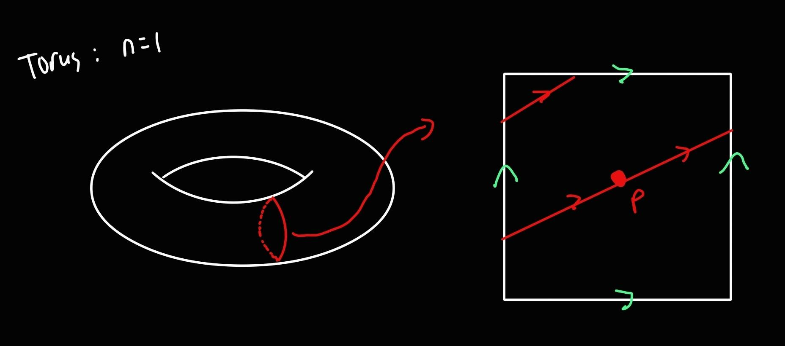
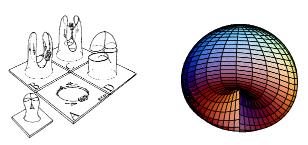
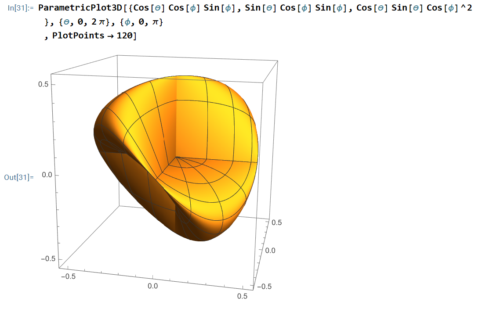

The Roman Surface
What is the Roman Surface?
The Roman Surface (also known as the Steiner Surface) is a quartic non-orientable surface. In fact it is one of three well known surfaces that are homeomorphic to the Real Projective Plane $RP^2$. The other two surfaces are called Boy's Surface and the Cross-cap Surface. Before we talk about some of the specifics of the roman surface, lets just quickly cover some important details about the real projective plane.
The Real Projective Plane.
The Real Projective plane is a euclidean plane that doesn't contain a sense of distance, circles, or parallelism. In fact, their are three important axioms we need to know in order to start talking about our surfaces. Lets take a look at these axioms:
Axioms
- Any two unique points create a line.
- Any two distinct lines intersect in exactly one point.
- Their exists a set of 4 points such that 3 of them are not colinear.
These axioms help us establish objects that we can use to describe how non-orientable surfaces can be plotted in a three dimensional space. This space helps us define lines and points at infinity in a topological sense (by axiom 3). Points in this space are pairs of opposite points called Antipodal pairs. Antipodal Pairs are generally described as {-p,p}, and these create lines passing through any surfaces center (by axiom 2). These lines are called lines of determination, and they help desbribe how you would travel between these antipodal in $RP^n$. Finally , with respect to $R^3$, we are able to describe these non-orientable surfaces in $R^3$ by embedding $RP^2$ into $R^3$ by using homeomorphism defined as $\mathbb{RP}^2 \approx S^2 / (x \sim -x)$. This homeomorphism states that the real projective plane can be described as a quotient space of spheres defined by antipodal points.
Lets take a look at a topological example: In this example, we are going to take a look at the upper hemisphere with a wraparoun behavior for its equator. You can see that when you choose a pair of antipodal points on the equator. these points will create a line at infinity that connects the two points together. Now if we were to flatten this hemisphere into a 2D sphere, we can map this to a topological square that shows inverted behaviors at infinity. If we were to connect the antipodal points, this would create a line at infinity with inverted behaviors, this describes how a non-orientable surface would behave on its own surface.

In Fact , we can clearly see the difference if we were to compare this to the easiest orientable surface, which is an n1 torus.

So How Does This Help Us Understand the Roman Surface?
So by looking at the Roman Surface (image provided at the end of the document) , we can see that it has a shape that oddly resembles a "squished in" 4-sided dice. In fact their are 2 unique ways to define the roman surface. Their are 2 main equations that define the roman surface, the Parametrice equations is defined as :
Parametric Equations
- $x=r^2cos(\theta)cos(\phi)sin(\phi)$
- $y=r^2sin(\theta)cos(\phi)sin(\phi)$
- $z=r^2cos(\theta)sin(\theta)cos(\phi)^2$
The Rectangular Function of the Roman surface is defined as : $x^2y^2+y^2z^2+z^2x^2-r^2xyz=0$
So these are some general ways of describing the roman surface in a three-dimensional euclidean space, however their is a much easier way to approach this surface. If we were to take a mobius strip and we intersected itself , we would get a surface called a crosscap, which is a non-orientable surface that intersects itself. Here is a image:

Whats special about the Roman surface is that it is actually a collection of 6 crosscaps! Because it contains 6 crosscaps, their is also three double lines, which are lines that the surface intersects twice. And the other unique thing about this surface is that it contains a triple point for its center. A triple point is not the same thing as an ordered triple, it is a point that the surface intersects three different times. And Finally, the triple point must be defined as the pair of antipodal points (-1,0,0) and (1,0,0). The reason why the center must be defined as such is so that every other point followes the same format. In fact, if everyone antipodal point on the surface follows this format, then the lines that exist between the points will help define the shapes of the cappcuts for the surface. To blend this all together, I have created an image that shows how the roman surface looks in $R^3$. We can clearly see the triple point, double lines, and the effect of the cappcuts of the surface.
Image of roman surface using mathematica
